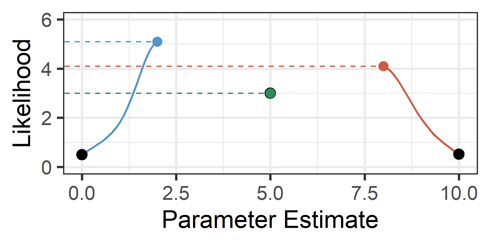

library(tidyverse)
library(glmmTMB)
library(easystats)Multilevel Modeling
Troubleshooting
Spring 2026 | CLAS | PSYC 894
Jeffrey M. Girard | Lecture 13a

Roadmap
- A Systematic Workflow
- Predictive Performance
- DHARMa Residuals
- Sensitivity & Easy Fixes
- Robustness to Outliers
- Bootstrapping & Modeling
Troubleshooting
Convergence Problems
- MLMs are inherently complex and datasets often lack the information needed for extreme parameterization.
- Convergence problems are a routine part of the MLM workflow.
- Do not ignore these warnings! Parameter estimates from non-converged models are mathematically unreliable.
- However, do not despair. Troubleshooting is a systematic process and there are standard steps to fix these issues.
The Likelihood Surface
Before diving into specific warnings, we must remember back to Lecture 04b.
- Maximum Likelihood Estimation: The optimizer searches for a combination of parameter values that maximizes the probability of observing the data.
- The Mountain Analogy: Imagine a multi-dimensional mountain. The optimizer takes steps to find the absolute highest peak.
- The Map and Compass: The optimizer uses local derivative information (the Gradient and Hessian) to aid in the search.
- The Problem: If the mountain has a flat ridge, multiple peaks, or a boundary it cannot cross, the optimizer gets confused and either throws a warning or silently stops at an invalid parameter value.
Optimization as Hill Climbing
- Select a random or “best guess” starting value1
- Estimate the likelihood of the current value2
- Detemine whether to increase or decrease the value3
- Update the current value by some amount (step size)4
- Repeat steps 2-4 until the change in likelihood is small5
Visual Example

Setup
Rows: 1,000
Columns: 10
$ clinic_id <dbl> 1, 1, 1, 1, 1, 1, 1, 1, 1, 1, 1, 1, 1, 1, 1, 1, 1…
$ patient_age <dbl> 63.70958, 44.35302, 53.63128, 56.32863, 54.04268,…
$ age_c <dbl> 13.7095845, -5.6469817, 3.6312841, 6.3286260, 4.0…
$ treatment_group <chr> "Placebo", "Active", "Placebo", "Active", "Placeb…
$ dosage_kg <dbl> 0.0012325058, 0.0010524122, 0.0010970733, 0.00103…
$ stress_score <dbl> 2.5057807, -2.7792405, -17.2473573, -20.0670494, …
$ anxiety_score <dbl> 2.0045560, -2.2234717, -13.7979266, -16.0537544, …
$ blood_pressure <dbl> 112.9516, 119.1437, 122.6372, 121.8468, 122.5581,…
$ viral_load <dbl> 996950.5, 999036.6, 996092.5, 998228.8, 997705.1,…
$ cortisol_level <dbl> 7.976840, 9.969775, 24.169540, 24.377656, 27.9032…Stage 1:
Data Fixes
Problem 1: Extreme Scaling
A frequent warning in glmmTMB is a “non-positive-definite Hessian matrix.” This simply means the optimizer cannot mathematically verify it has found a peak. One common cause is a numerical issue resulting from variables living on vastly different mathematical scales.
Detecting Extreme Scaling
Look for means/medians or ranges that are on wildly different scales
Addressing Extreme Scaling
The Fix: We need to get the variables on similar scales. It is recommended to rescale outcomes (to preserve ICC) and standardize predictors. Here, we can divide viral_load by 10,000 to get its mean down from ~1M to ~100.
Problem 2: Collinearity
The Hessian warning can also be triggered when the optimizer gets stuck on a flat likelihood ridge. A second major cause for this is severe collinearity among predictors, which confuses the optimizer because multiple parameter combinations yield the same model fit.
Warning in finalizeTMB(TMBStruc, obj, fit, h, data.tmb.old): Model
convergence problem; non-positive-definite Hessian matrix. See
vignette('troubleshooting')Verifying Collinearity
We need to remove the redundant information. It is recommended to check Variance Inflation Factors (VIFs) and then drop one of the collinear predictors. Recall that VIFs of 5+ indicate moderate and 10+ indicate high collinearity.
Addressing Collinearity
Stage 2:
Structural Fixes
Problem 3: Overparameterization
A third cause of the Hessian warning is when the optimizer hits a mathematical boundary. However, note that glmmTMB will sometimes converge silently despite this issue! This occurs when a variance is estimated near 0 (e.g., e-13) or a correlation between random effects is near +/- 1.00. The problem is that the model is too complex for the data.
Warning in (function (start, objective, gradient = NULL, hessian = NULL, :
NA/NaN function evaluationWarning in finalizeTMB(TMBStruc, obj, fit, h, data.tmb.old): Model
convergence problem; non-positive-definite Hessian matrix. See
vignette('troubleshooting')Identifying Overparameterization
To figure out if overparameterization caused the warning, you must actively inspect your random effect parameters.
# Random Effects
Parameter | Coefficient | 95% CI
-------------------------------------------------------
SD (Intercept: clinic_id) | 2.14 |
SD (age_c: clinic_id) | 3.37e-13 |
Cor (Intercept~age_c: clinic_id) | -0.99 |
SD (Residual) | 5.18 | Notice the “smoking gun” in the output: the random effect correlation is nearly –1 and the random slope standard deviation is essentially zero.
Step 1: Remove Covariances
We start by simplifying the structure without dropping variables. We force the correlation between the intercept and slope to be zero using diag().
# Random Effects
Parameter | Coefficient | 95% CI
-------------------------------------------------------
SD (Intercept: clinic_id) | 2.14 |
SD (age_c: clinic_id) | 1.42e-16 |
Cor (Intercept~age_c: clinic_id) | 0.00 |
SD (Residual) | 5.18 | The Zero-Correlation Assumption
Using diag() is a significant change to your model. It explicitly assumes that the correlations between your random effects are zero (e.g., \(\tau_{01}=0\)).
- Pooling Information: By allowing \(r \neq 0\), the model “pools information” across parameters. Knowing a cluster has a high intercept helps the model estimate its slope.
diag()places parameters in “silos,” preventing the model from “borrowing strength” from these relationships. - Substantive Trade-off: You may gain model stability but you lose the ability to estimate and interpret the RE correlation(s).
- Statistical Trade-off: If strong correlation(s) exist, forcing them to zero can bias SEs, though this may be preferable to non-convergence.
Step 2: Prune Random Slopes
In our updated results, the random slope SD was still very close to zero even after setting the RE correlation to zero. The next step may be to drop it (i.e., estimate a fixed slope only, assuming it is the same across all clusters).
# Random Effects
Parameter | Coefficient | 95% CI
------------------------------------------------
SD (Intercept: clinic_id) | 2.14 |
SD (Residual) | 5.18 | The Pruning Dilemma
While we simplify to reach convergence, we must be careful with our tests.
CRITICAL RULE: Be extremely cautious when dropping the random slope for the specific fixed-effect predictor you are hypothesis testing.
- The Risk: If a true random slope exists but you drop it to force a struggling model to converge, you inflate your Type I error rate. A \(p < .05\) in a model with a missing focal random slope is often a false positive.
- The Exception: If the variance is estimated at zero, dropping the slope does not inflate Type I error because the model wasn’t using it anyway.
Stage 3:
Algorithmic Fixes
Tweak the Algorithm
If your variables are scaled, not perfectly collinear, and your structure is justified, but glmmTMB still throws a warning, the algorithm may just need more time or a different search strategy.
Increase the number of iterations and evaluations:
Troubleshooting Cheatsheet
When your model throws a convergence warning (or produces boundary estimates), follow this general order of operations:
- Stage 1: Fix your Data. Check for extreme scaling or severe collinearity.
- Fix: Center, scale, or remove redundant variables.
- Stage 2: Fix your Structure (Top-Down). Did a variance hit near zero or a correlation hit near \(\pm1.00\)?
- Step A: Remove RE covariances (e.g., using
diag()). - Step B: Prune zero-variance components.
- Rule: Protect the focal random slope unless its variance is truly zero.
- Step A: Remove RE covariances (e.g., using
- Stage 3: Tweak the Algorithm. If the model is fully justified but struggling, increase iterations or change the optimizer via
glmmTMBControl().
Bayes
Bayesian Estimation
Maximum Likelihood Estimation searches for a single highest peak. When the data lacks information, that peak disappears or becomes impossible to find.
- The Bayesian Solution: Instead of finding a single point, Bayesian estimation maps out the entire landscape of probable values.
- Priors as Guardrails: By providing prior information, we can prevent the model from wandering into absurd territory (e.g., negative variances).
- Two popular R packages for Bayesian MLM are {brms} and {rstanarm}. I personally prefer the former, but the latter is easier to start with.
- {rstanarm} can be be installed from CRAN and chooses reasonable weak priors for you.
- Both use Stan to perform Markov Chain Monte Carlo (MCMC).
MCMC Overview
Exploring vs. Climbing: If MLE is a focused climber racing to find the single highest peak, MCMC is a wanderer exploring the entire mountain range to map its total volume and shape.
Volume over Altitude: MLE fails when a peak is flat or hidden; MCMC succeeds by spending time proportionally: it stays longer in high-probability areas but intentionally visits lower-probability valleys to capture the full range of uncertainty.
Sampling over Solving: Instead of using a compass (derivatives) to find the fastest path “up”, MCMC uses a stochastic “random walk” to build a massive collection of representative snapshots of the landscape.
The Result: MLE ends at a single coordinate (the “Best Guess”); MCMC results in a “Posterior Distribution” of thousands of valid guesses that reveal exactly how much we should trust our estimate.
Example syntax of rstanarm
Example output of rstanarm
# Fixed Effects
Parameter | Median | 95% CI | pd | Rhat | ESS | Prior
---------------------------------------------------------------------------------------------
(Intercept) | 119.54 | [118.86, 120.19] | 100% | 1.001 | 1773 | Normal (119.53 +- 14.01)
age_c | -1.90e-03 | [ -0.04, 0.03] | 54.12% | 0.999 | 6766 | Normal (0.00 +- 1.40)
# Random Effects
Parameter | Median | 95% CI | pd | Rhat | ESS
--------------------------------------------------------------------------
Sigma (Intercept) | 4.55 | [ 2.76, 7.59] | 100% | 1.001 | 1563
Sigma (age_c~Intercept) | 0.02 | [-0.05, 0.10] | 70.97% | 1.000 | 4484
Sigma (age_c) | 1.29e-03 | [ 0.00, 0.01] | 100% | 1.001 | 1944- Median and 95% CI are point and interval estimates
- pd is probability of direction (significant if > 97.5%)
- Converged if all Rhat < 1.1 and ESS > 400 (i.e., chains × 100)